TRAVPLAN · 챕터 발표 · 강화학습
시연으로 시작해
보상으로 다듬는다
버클리 CS 185/285의 순서로 본 강화학습과, travplan이 그것을 쓰는 세 자리
§R
R.0–R.19
TP-0066
TP-0128
TP-0150
순서
강의를 다섯 갈래로 묶고 travplan으로 돌아온다
| 장 | 갈래 | 핵심 | 문서 절 |
|---|---|---|---|
| 1 | 문제 설정과 모방 | MDP, Bellman 식, 행동 복제의 분포 이동 | R.0–R.2 |
| 2 | 정책 기울기 | REINFORCE, 진화 전략, actor-critic, PPO | R.3–R.5 |
| 3 | 가치 기반과 오프라인 | Q-learning의 과대평가, CQL·IQL, AWR | R.6, R.10 |
| 4 | 추론으로서의 제어와 모델 기반 | 최대 엔트로피 RL, MPPI, 모델 오차 | R.8, R.9 |
| 5 | 생성 정책의 RL과 안전 | GRPO, FPO·FPO++, 꼬리 위험 | R.12, R.13 |
| 6 | 최근 연구 비교 | 2025–2026 연구 14편의 공통점과 차이점 | R.19 |
| 7 | travplan에서 | TP-0066·0138 결과, 판정의 통계, 다음 후보 | R.14, R.16 |
R.16 · 왜 강화학습인가
travplan은 이미 세 자리에서 강화학습을 쓴다
| 자리 | 방법 | 문서 절 | 기록 |
|---|---|---|---|
| Planner D 후학습 | 후보 16개의 그룹 상대 이점, AWR 가중 flow matching, 모방 가중 0.5 | R.10, R.12 | TP-0066: curb_ramp 레벨 3 단독 20/30 → 26/30 |
| Playground 학습 Controller | OpenAI-ES, 보상은 벤치마크 판정 | R.3 | TP-0128: 사족 12/12, 바퀴 8/12 |
| Controller | MPPI, 제어를 추론으로 본 모델 기반 계획 | R.8, R.9 | TP-0150: mppi_plant_lag, 치명 55 → 4 |
| 시연 학습 | 행동 복제와 DAgger | R.2 | TP-0073, TP-0143 |
travplan: 다음 자리는 plant와 L1을 넣은 폐루프 후학습이다.
R.0 · 자료와 최적화
모방은 시연자만큼, 강화학습은 그 너머를 노린다
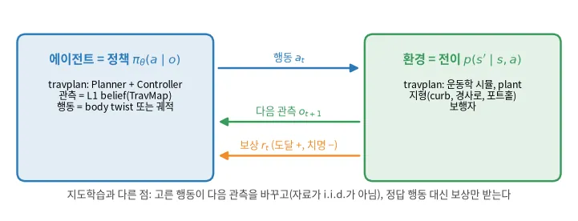
| 지도학습(모방) | 강화학습 | |
|---|---|---|
| 받는 것 | "이 지도에서는 이 궤적"이라는 시연 | 궤적을 굴려 받은 점수(도달 +, 치명 셀 −) |
| 넘을 수 있는 한계 | 시연자만큼 | 시연자보다 나을 수 있다 |
| 드는 것 | 시연(교사) | 표본(시뮬레이터) |
| travplan | Planner D 사전학습, DAgger(TP-0073) | Planner D 후학습(TP-0066) |
1 · 문제 설정과 모방 · R.0–R.2 · 강의 1–4
정답 대신 점수를 받고,
내 행동이 다음 입력을 바꾼다
여기서 강화학습의 세 어려움이 나온다. 신용 할당, 탐색, 분포 이동이다.
R.1 · MDP와 가치 함수
목표는 보상 기댓값이 가장 큰 정책이다
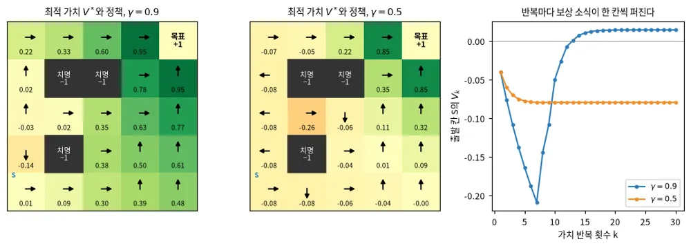
travplan: Guidance의 Dijkstra 최단 cost는 결정적·무할인 MDP의 가치에서 부호만 바꾼 것이다.
R.2 · 모방학습
행동 복제는 쉽지만 작은 실수가 쌓인다
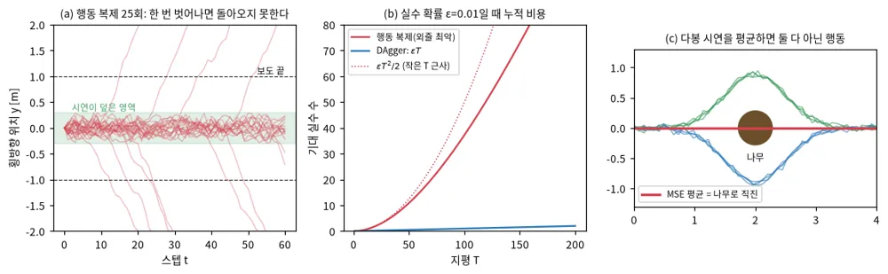
travplan: 경사로를 지나친 상태에서 무너지는 것이 분포 이동이고, 대책이 DAgger(TP-0073, TP-0143)다.
[1] DAgger — arXiv:1011.0686
2 · 정책 기울기 · R.3–R.5 · 강의 5–6, 9–10
잘된 궤적의 확률을 높이고
못된 궤적의 확률을 낮춘다
보상도 시뮬레이터도 미분하지 않는다. 대가는 큰 분산이고, 이 장은 그 분산을 줄이는 요령들이다.
R.3 · REINFORCE
기준선을 빼면 기울기의 분산이 크게 준다
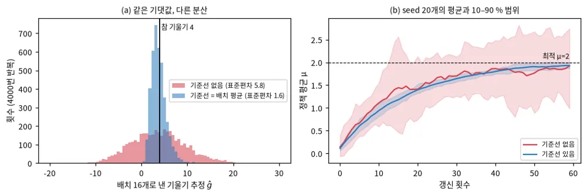
travplan: TP-0066은 같은 상태에서 뽑은 다른 후보들의 평균을 기준선으로 쓴다.
R.3 · 진화 전략 · TP-0128
판정이 계단 함수여도 진화 전략은 배운다

travplan: 가중치 1,675개 정책이 사족에서 MPPI와 같은 12/12를 0.02 ms에 냈다.
[1] 진화 전략 — arXiv:1703.03864
R.4 · Actor-critic과 GAE
critic이 앞을 내다보면 분산은 줄고 편향이 생긴다
- \(\lambda = 0\): 표준편차 0.32, 편향 0.074
- \(\lambda = 1\): 표준편차 1.41, 편향 0
- 비대칭 critic은 GT 지형 같은 특권 정보를 본다
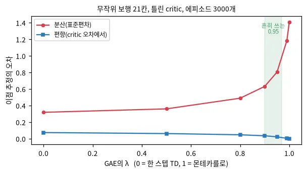
travplan: critic에 GT 지도와 plant 상태를 주는 비대칭 critic이 다음 후보 3이다.
[1] GAE — arXiv:1506.02438
R.5 · TRPO와 PPO
PPO는 비율을 잘라 한 번의 갱신 폭을 묶는다
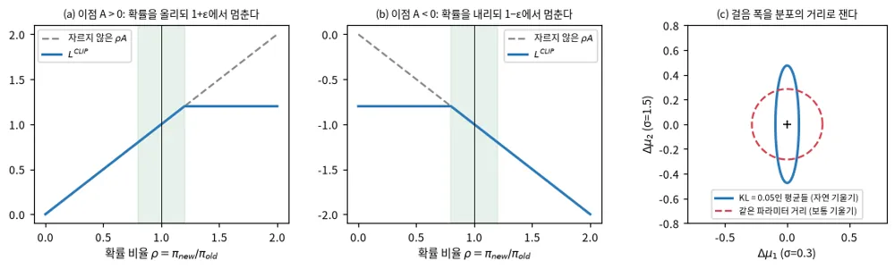
travplan: flow 정책은 비율 ρ의 재료인 로그 확률을 바로 주지 않는다. 이것이 5장의 문제다.
[1] TRPO — arXiv:1502.05477 · [2] PPO — arXiv:1707.06347
3 · 가치 기반과 오프라인 · R.6, R.10 · 강의 7–8, 17–18
자료 밖 행동의 가치를
믿지 않는 법을 배운다
max는 잡음을 과대평가하고, 오프라인에서는 그 오차를 바로잡을 새 자료가 없다.
R.6 · Q-learning
max를 쓴 목표는 가치를 과대평가한다
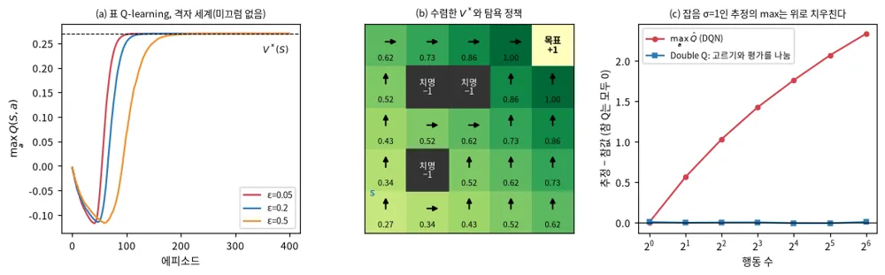
travplan: MPPI 표본 768개 중 가장 낮은 비용도 잡음 때문에 실제보다 낮게 보인다.
[1] DQN — arXiv:1312.5602 · [2] Double Q — arXiv:1509.06461 · [3] TD3 — arXiv:1802.09477
R.10 · 오프라인 RL
오프라인 RL은 자료 밖 행동을 과대평가하지 않게 막는다
AWR
새 정책을 자료 정책 가까이에 묶는다
CQL
자료에 없는 행동의 Q를 끌어내린다
IQL
자료 안 행동의 expectile로 가치를 배운다
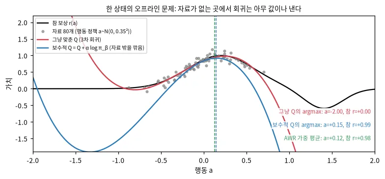
travplan: 벤치마크 기록에는 Guidance가 고른 경로의 결과만 있다. 기록만으로 배우면 이 문제가 바로 생긴다.
[1] AWR — arXiv:1910.00177 · [2] CQL — arXiv:2006.04779 · [3] IQL — arXiv:2110.06169
R.10 · AWR
AWR은 이점의 지수로 가중한 행동 복제다
이점 +0.3, 0, −0.3, β = 0.15
가중은 7.39, 1, 0.135이고 정규화하면 0.867, 0.117, 0.016이다.
좋은 행동을 거의 다 따라 하고 나쁜 행동은 거의 무시한다.
AWR 쪽이지만 순수 오프라인은 아니다
매 라운드 지금의 Planner D로 후보를 새로 뽑는다.
모방 가중 λ = 0.5가 KL 제약과 비슷한 일을 한다.
travplan: AWR은 자료에 없는 행동을 만들지 않는다. 안전하지만 시연 밖으로는 멀리 못 간다.
4 · 추론으로서의 제어와 모델 기반 · R.8, R.9 · 강의 12–13, 15–16
MPPI는 최대 엔트로피 RL의
표본 판이다
최적 행동을 고르는 일을 확률 추론으로 보면, 정책 없이 매 스텝 행동열을 추론할 수 있다. 그 답을 정하는 것은 비용과 모델이다.
R.8 · 제어를 추론으로
최적 궤적의 사후분포는 보상의 지수로 가중된다
SAC
최적 정책은 \(\pi(a \mid s) \propto \exp(Q(s, a)/\alpha)\)다. 엔트로피 항이 탐색을 유지하고 여러 해를 함께 남긴다.
MPPI
\(q^*(U) \propto p(U) \exp(-J(U)/\lambda)\)에서 표본 \(U_k\)를 뽑아 \(w_k \propto \exp(-J_k/\lambda)\)로 평균한다.
travplan: MPPI의 온도 λ가 SAC의 엔트로피 가중 α에 해당한다.
[1] 제어를 추론으로 — arXiv:1805.00909 · [2] SAC — arXiv:1801.01290 · [3] MPPI — arXiv:1509.01149
R.8 · MPPI의 온도
온도는 표본 몇 개 분량의 정보를 쓸지 정한다

λ = 0.03
표본 1.6개 분량. 가장 좋은 표본 하나에 몰린다(탐욕).
λ = 3
표본 59.4개 분량. 평균에 가까워진다.
travplan: MPPI 온도(MPPIConfig.temperature) 기본값은 0.5이고 비용 범위로 정규화하지 않는다.
R.9 · 모델 기반 RL
계획은 모델이 틀린 곳을 찾아가 이용한다
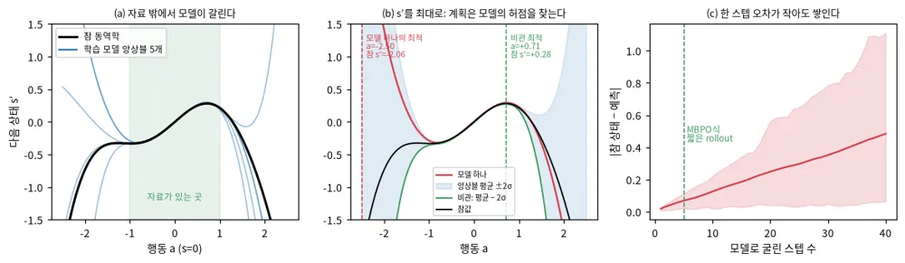
불확실성
앙상블로 모르는 곳을 표시한다(PETS)
짧은 rollout
실제 상태에서 몇 스텝만 굴린다(MBPO)
잠재 공간
잠재 상태에서 굴린다(Dreamer, TD-MPC2)
travplan: MPPI는 손으로 만든 SwerveModel로 하는 모델 기반 계획이다.
[1] PETS — arXiv:1805.12114 · [2] MBPO — arXiv:1906.08253 · [3] Dreamer — arXiv:1912.01603 · [4] TD-MPC2 — arXiv:2310.16828
R.9 · TP-0149–0152 · 권장 L1 + 스워브 plant 레벨 3
rollout 모델에 지연을 넣자 치명이 55에서 4로 줄었다

| Controller | 도달 | 치명 | 무엇이 다른가 |
|---|---|---|---|
mppi | 221/360 | 55 | rollout이 plant의 지연을 모른다(TP-0149) |
mppi_plant_lag | 239/360 | 4 | rollout에 지연을 넣었다(TP-0150) |
mpc · mpc_gp | 222 · 215/360 | 34 · 32 | NMPC 갈래(TP-0152) |
5 · 생성 정책의 RL과 안전 · R.12, R.13 · 강의 14와 강의 밖
Planner D는 flow 정책이라
이 장이 가장 가깝다
로그 확률 없이 강화학습에 넣는 법과, 안전을 보상에 섞지 않는 법을 본다.
R.12 · RLHF, DPO, GRPO
GRPO는 critic 없이 그룹 평균을 기준선으로 쓴다
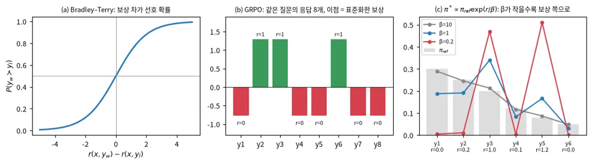
travplan: TP-0066이 같은 계산을 한다. 질문 대신 상태, 응답 대신 후보 궤적 16개다.
[1] RLHF — arXiv:2203.02155 · [2] DPO — arXiv:2305.18290 · [3] GRPO — arXiv:2402.03300
R.13 · 확산·flow 정책의 RL
flow 정책의 RL은 로그 확률을 우회하는 법으로 갈린다
| 방법 | 발표 | 로그 확률 문제를 푸는 법 | 쓰는 RL |
|---|---|---|---|
| DPPO | ICLR 2025 | denoising 스텝마다 가우시안 행동으로 보고 환경 MDP 안에 denoising MDP를 넣는다 | PPO |
| FPO | 2025 | 가능도 비율 대신 조건부 flow matching 손실의 차이를 비율로 쓴다 | PPO 자른 목표 |
| ReinFlow | NeurIPS 2025 | flow 경로에 학습하는 잡음을 넣어 이산 Markov 과정으로 만든다 | 정책 기울기 |
| FPO++ | 2026 | 비율을 표본마다 자르고 음의 이점에는 비대칭 신뢰 영역을 쓴다 | PPO(ASPO) |
| QF3 | 2026 | critic의 행동 기울기를 replay 행동 가까운 차원에만 흘린다 | off-policy(FastTD3) |
| QSM, SSM | ICML 2024, NeurIPS 2026 | 정책의 점수를 critic의 행동 기울기에 맞춘다 | off-policy actor-critic |
travplan: FPO는 Planner D의 학습 손실을 거의 그대로 둔 채 PPO로 넘어가게 한다.
DPPO arXiv:2409.00588 · FPO arXiv:2507.21053 · ReinFlow arXiv:2505.22094 · QSM arXiv:2312.11752
R.13 · FPO++ (2026.02)
FPO++는 flow 정책을 실물 휴머노이드까지 옮겼다
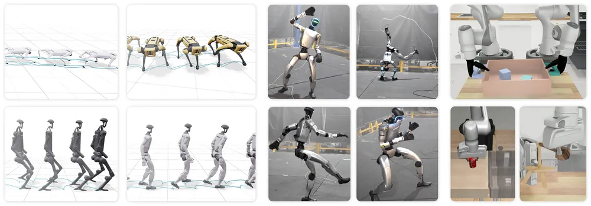
- 비율을 표본마다 만들어 따로 자른다
- 음의 이점에는 SPO의 이차 벌점(ASPO)
- FPO가 아니라 FPO++부터 시작한다
- 조작 미세조정에서는 ASPO를 껐다 → 끈 판과 켠 판을 함께 잰다
[1] FPO++ — arXiv:2602.02481 (Amazon FAR·UC Berkeley·Stanford·CMU 등)
R.13 · 안전 제약
안전은 평균이 아니라 꼬리로 본다
Safe Score Matching
HJ 도달 가능성 critic으로 점수 목표를 안전 집합 안과 밖으로 나눈다.
GT 지도로 치명까지의 HJ 라벨을 만들 수 있다.
SPiDR
무작위화 시뮬 n개의 다음 상태 분산을 안전 비용에 더한다.
plant 변형 여럿으로 후보 점수를 굴린다.
VIA
CVaR 제약으로 배우고 학습 뒤 행동 도달 집합으로 검증한다.
그룹 이점을 하위 분위로 잡는다.
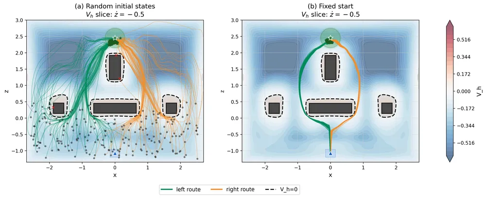
travplan: "치명이 하나라도 늘면 채택하지 않는다"는 원칙은 이미 꼬리를 본다.
SSM arXiv:2609.33337 · SPiDR arXiv:2509.18648 · VIA arXiv:2605.14174
6 · 최근 연구 비교 · R.19 · 2025–2026
시연으로 시작해 RL로 다듬고,
섭동과 비관으로 실물에 옮긴다
Planner D는 이 흐름의 앞 절반에 이미 있다. 빠진 것은 배운 critic, plant·L1을 넣은 rollout, 꼬리를 보는 안전 신호다.
R.19 · 비교표 1/2 · 2025
2025년 연구는 생성 정책을 시연 근처에서 다듬는다
| 이름(연·발표) | 방법의 핵심 | 학습 신호 | 로봇·실험 |
|---|---|---|---|
| ReinFlow (2025.05 · NeurIPS 2025) | flow 경로에 학습 잡음을 넣어 가능도를 정확히 계산 | 온라인 정책 기울기 | 시뮬 보행·조작 |
| DSRL (2025.06 · CoRL 2025) | 기본 정책은 그대로, 시작 잡음을 고르는 정책만 배운다 | 온라인 off-policy | 시뮬과 실물 로봇 |
| Q-chunking (2025.07 · NeurIPS 2025) | 묶음 critic과 행동 복제 flow에 묶은 best-of-N | 오프라인 뒤 온라인 | OGBench, Robomimic |
| SPiDR (2025.09 · NeurIPS 2025) | 무작위화 시뮬 앙상블의 분산을 안전 비용에 더한다 | 제약 SAC, PPO | RC 경주차, Go1 실물 |
| Dreamer 4 (2025.09) | 배운 world model 안의 상상 rollout | 행동 복제 뒤 PMPO | Minecraft, 로봇 없음 |
| RL-100 (2025.10) | 모방·오프라인·온라인을 자른 PPO 목표 하나로 잇는다 | PPO(자른 목표) | 실물 조작 8과제 |
| FastSAC·FastTD3 (2025.12) | 대규모 병렬 off-policy 레시피 | SAC, TD3, 분포 critic | G1, T1 실물 |
R.19 · 비교표 2/2 · 2026
2026년 연구는 실물 이전과 안전 검증으로 넓어졌다
| 이름(연·발표) | 방법의 핵심 | 학습 신호 | 로봇·실험 |
|---|---|---|---|
| FPO++ (2026.02) | 표본별 비율 자르기와 비대칭 신뢰 영역 | PPO(ASPO) | T1·G1 실물 |
| FINO (2026.02 · ICLR 2026) | flow 입력 잡음과 엔트로피 유도 선택 | 오프라인 뒤 온라인 | OGBench, D4RL |
| SimDist (2026.03 · RSS 2026) | 시뮬 world model, 실물은 동역학만 고친다 | 시스템 식별과 MPPI | UR5e, Go2 실물 |
| VIA (2026.05 · IROS 2026) | CVaR 제약과 학습 뒤 도달 집합 검증 | 제약 TD3 | Jackal 실물 |
| NavRL++ (2026.05) | 깨끗한 사전학습 뒤 다섯 섭동 미세조정 | PPO | 쿼드콥터, 4족 실물 |
| Safe Score Matching (2026.09 · NeurIPS 2026) | HJ 도달 critic으로 점수 목표를 둘로 나눈다 | off-policy actor-critic | 쿼드로터·F-16 시뮬 |
| QF3 (2026.10) | replay 행동 가까운 차원에만 Q 기울기 | off-policy(FastTD3 위) | 휴머노이드 실물 |
R.19 · 공통점
최근 연구는 다섯 가지를 함께 한다
1 · 시연으로 시작하고 RL로 다듬는다
다듬을 때도 시연 정책 가까이에 묶는다(DSRL, Q-chunking, FINO, Dreamer 4의 KL).
2 · 로그 확률을 피한다
손실 차이(FPO++), 잡음 공간(DSRL), critic 기울기(QF3, SSM), best-of-N(Q-chunking, FINO)
3 · critic이 자료 밖에서 틀리는 것을 막는다
기울기를 자르거나, 자료 정책에 묶거나, 불확실성을 비용에 더한다.
4 · 실물로 갈 때 지연을 넣는다
행동 지연이 무작위화나 섭동의 항목이다(FastSAC 보행, FPO++, NavRL++).
5 · 병렬 시뮬이 기본이다
환경 1,024–16,384개를 한 GPU 묶음에서 돌린다.
travplan: 1·2는 이미 하고 있고(초록), 3·4·5가 빠져 있다(주황).
R.19 · 차이점
차이는 다섯 축에서 갈린다
| 축 | 한쪽 | 다른 쪽 | 얻는 것과 잃는 것 |
|---|---|---|---|
| on- / off-policy | PPO 계열(FPO++, RL-100, NavRL++) | 재생 버퍼(FastSAC, QF3, Q-chunking) | on은 안정적이고, off는 빠르지만 critic 오류를 따로 막아야 한다 |
| 가중치를 고치나 | RL로 고친다(FPO++, QF3) | 얼리고 잡음·선택만 배운다(DSRL) | 얼리면 안전하지만 시연이 못 내는 행동은 끝내 못 낸다 |
| 모델을 어디에 | 시뮬을 직접 굴린다(FPO++) | 배운 모델 안(Dreamer 4, SimDist) | 배운 모델은 실물로 고칠 수 있지만 계획기가 오차를 이용한다 |
| 안전을 어디에 | 학습 목표 안(SSM, SPiDR) | 학습 뒤 검증·필터(VIA, NavRL++) | 학습 안은 보장이 없고, 검증·필터는 정책을 바꾸지 않는다 |
| 위험의 척도 | 평균 비용(라그랑주, RCPO) | 꼬리와 최악(CVaR, HJ) | 꼬리는 보수적이지만 드문 치명 하나를 놓치지 않는다 |
R.19 · travplan이 시도할 순서
critic 선택기부터 하고, 섭동 후학습은 마지막에 둔다
궤적 critic으로 선택기 바꾸기
TP-0066 rollout 점수로 critic을 배워 후보 16개의 비학습 점수를 대신한다.
AWR을 FPO++ 목표로 바꾸기
같은 그룹 이점에 표본별 비율과 자른 목표를 쓴다. ASPO는 끈 판도 잰다.
MPPI에 학습한 끝 가치 더하기
GP 평균은 치명을 0으로 했지만 멈춤이 늘었다. 지평 너머 진행을 본다.
plant·L1 섭동 미세조정
NavRL++에서 합성곱 정책은 92.85 %→77.30 %로 퇴행했다. 퇴행부터 잰다.
판정: 각 팔 seed 0–9 × rng-offset 3판을 paired_success.py로 짝 비교하고, 치명이 하나라도 늘면 기각한다.
7 · travplan에서 · R.16, R.14
후학습은 표본을 낫게 했지만
단독은 아직 판정 아래다
TP-0066의 결과, 갱신 한 번의 계산, 2단계 시도, 판정의 통계, 다음 자리 순서로 본다.
R.16 · TP-0066 · curb_ramp 레벨 3, seed 0–9 × 오프셋 3
RL 후학습은 단독 26/30, 폴백과 30/30이다

| 스택 | 도달 | 짝 비교 대 DAgger 단독 | 폴백이 이긴 계획 | 도달 시간 | 보행자 최소 여유 |
|---|---|---|---|---|---|
| RL 단독 | 26/30 | 1 : 7, p = 0.070 | — | 34.4 s | 0.18 m |
| RL + 폴백 | 30/30 | 0 : 10, p = 0.002 | 42 % (DAgger + 폴백 51 %) | 28.9 s | 0.24 m |
travplan: RL은 학습 표본을 낫게 만들지만, 단독으로는 아직 판정(27/30) 아래다.
R.16 · 갱신 한 번 따라가기
갱신 한 번은 후보 16개를 굴려 점수로 가중한다
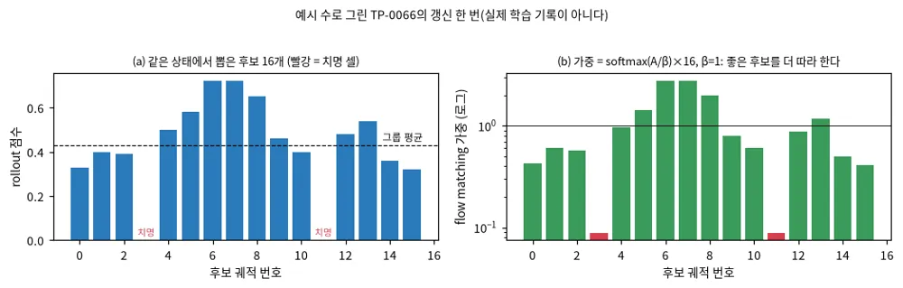
scripts/rl_finetune_planner_d.py의 weights()와 같은 식 — scripts/make_rl_figures.py후보 뽑기
Planner D가 belief에서 궤적 16개를 낸다(R.13)
→
점수
SwerveModel로 굴려 GT 지도에서 채점한다(R.9)
→
그룹 이점
평균 0.43, 표준편차 0.21로 표준화한다(R.12)
→
가중 복제
최고 2.76, 치명 0.09로 가중한다(R.10)
R.16 · TP-0138 · Planner 문서 B.15.5
2단계 후학습은 26/30을 넘지 못해 1단계를 유지한다

curb_ramp 레벨 3만 6 라운드, 모든 지형 레벨 2–3 3 라운드. 둘 다 단독 26/30이다.
보상이 한 계획 시점의 후보를 4 s 개루프로 한 번 채점한다. 경사로를 지나친 뒤의 재탐색은 보상하지 못한다.
R.14 · RL 이론과 잡음 바닥
12 에피소드의 한두 개 차이는 잡음 구간 안이다
성공률의 표준오차는 \(\sqrt{p(1-p)/n}\)이다. 오차를 절반으로 줄이려면 에피소드가 4배 든다.
| 에피소드 | 참 90 %의 95 % 구간 | 참 97 % |
|---|---|---|
| 12 (1층 스모크) | ±17.0 %p | ±9.7 %p |
| 120 (레벨 3 한 판) | ±5.4 %p | ±3.1 %p |
| 360 (레벨 3 세 판) | ±3.1 %p | ±1.8 %p |
| 갈린 에피소드 | p < 0.05 최소 차이 | p |
|---|---|---|
| 6 | 6 : 0 | 0.031 |
| 12 | 10 : 2 | 0.039 |
| 24 | 18 : 6 | 0.023 |
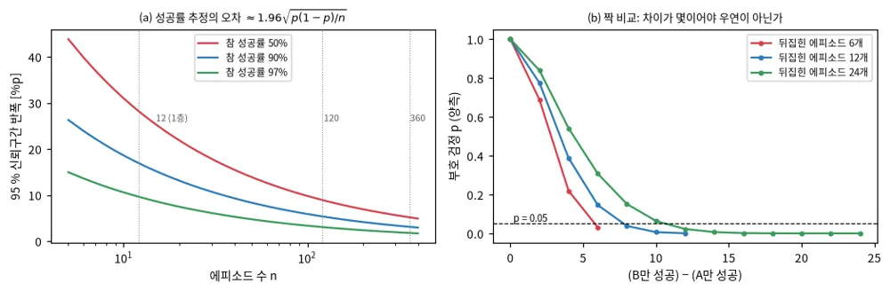
travplan: 혼돈 조건은 3판 짝 비교로 보고, p만으로 판정하지 않는다(2층 게이트).
R.16 · 다음 후보
다음 자리는 plant와 L1을 넣은 폐루프 후학습이다
plant와 L1을 넣은 후학습
지금 후학습은 이상 모델과 L0 지도로 했다. TP-0153의 GPU 경로로 L1 에피소드가 약 3.5배 빨라졌다.
FPO로 PPO 비율 쓰기
critic을 더하면 actor-critic으로 넘어간다. 가중치를 두고 시작 잡음만 배우는 DSRL도 있다.
비대칭 critic과 안전 critic
critic에 GT 지도와 plant 상태를 준다. 치명 셀까지의 최악 여유를 따로 배운다(SSM).
오프라인 자료
results/의 기록을 IQL식으로 쓴다. 자료 정책보다 나아질 수 있는지부터 작게 잰다.
travplan: R.19는 같은 후보를 비용 순으로 다시 세워 critic 선택기를 먼저 둔다.
정리
시연으로 시작하고, 표본으로 다듬고, 꼬리로 판정한다
세 자리
Planner D 후학습(AWR, TP-0066), 학습 Controller(ES, TP-0128), MPPI(모델 기반, TP-0150)
빠진 것
배운 critic, plant·L1을 넣은 rollout, 꼬리를 보는 안전 신호
판정
3판 짝 비교, 치명이 하나라도 늘면 기각
- 1, 2, 4, 5, 6, 9강 — 정책 기울기까지
- 19강 — 제어를 추론으로(MPPI)
- 11·12강 — 모델 기반
- 15·16강 — 오프라인(AWR)
- 10강 — 최적 제어(NMPC)
문서는 R.0, R.1, R.2, R.3, R.5, R.8, R.16 순서로 읽는다.
참고문헌
모든 출처는 리서치 문서 §R에 링크가 있다
강의 — CS 185/285 Deep RL(Sergey Levine), 2026 봄 슬라이드, 2023·2018 영상
모방 — DAgger arXiv:1011.0686
정책 기울기 — ES 1703.03864 · GAE 1506.02438 · TRPO 1502.05477 · PPO 1707.06347
가치·오프라인 — DQN 1312.5602 · Double Q 1509.06461 · TD3 1802.09477 · AWR 1910.00177 · CQL 2006.04779 · IQL 2110.06169
추론 — 제어를 추론으로 1805.00909 · SAC 1801.01290 · MPPI 1509.01149
모델 기반 — PETS 1805.12114 · MBPO 1906.08253 · Dreamer 1912.01603 · TD-MPC2 2310.16828
언어 모델 — RLHF 2203.02155 · DPO 2305.18290 · GRPO 2402.03300
flow 정책 — DPPO 2409.00588 · FPO 2507.21053 · ReinFlow 2505.22094 · QSM 2312.11752 · FPO++ 2602.02481 · QF3 2610.08789
오프라인 후학습 — DSRL 2506.15799 · Q-chunking 2507.07969 · FINO 2602.18117 · RECAP 2511.14759 · RL-100 2510.14830
모델·이전 — Dreamer 4 2509.24527 · SimDist 2603.15759 · FastSAC 2512.01996 · NavRL++ 2605.15559
안전 — SSM 2609.33337 · SPiDR 2509.18648 · VIA 2605.14174